Majoitus
Ulkopaikkakuntalaiset YTP-osallistujat majoittuvat osoitteessa Ruiskatu 8. Majoituksessa ollessasi muistathan kunnioittaa tiloja sekä tiloissa olevia majoitusvalvojia. Roskat roskiin, tarpeet vain saniteettitiloihin ja desibelilevelit kohtuullisissa rajoissa. T.äiti
Aukioloajat:
- Keskiviikkona 17.10. klo 10-12 sekä uudelleen illalla klo 21 eteenpäin
- Torstaina 18.10. klo 11 saakka sekä uudelleen illlalla klo 21 eteenpäin
- Perjantaina 19.10 klo 11 saakka
HUOM! Majoituksen aukioloajat ovat edellämainitut eikä niistä poiketa, joten jos liityt tapahtumaan myöhemmin ja haluat majoitukseen tavaroitasi, kannattaa reput ja pussukat kuljetuttaa YTP-toverisi mukana Ruiskadulle. Ole myös tarkkana, että otat kaiken tarvitsemasi mukaan majoituksesta poistuessasi, ettei haalarin taskusta puuttuva kinnas tai pullonavaaja pääse lannistamaan YTP-tunnelmaa!
Majoitukseen takaisin pääsee kätevimmin käyttämällä YTP-osallistujille järjestettyjä busseja, jotka kulkevat yöllä keskustasta majoitukseen. Bussin lähtöpaikka keskustassa on *insert bussin lähtöpaikka*
Bussi lähtee liikkeelle tasatunnein klo 02, 03, 04 ja 05 tai kun se on täynnä!
Bussin lähtöpaikka Google MapsissaTaksitolpat
- Yliopiston vierestä
- Keskusta, keskiviikon jatkobileiden vierestä
- Keskusta, torstain jatkobileiden vierestä
- Keskusta, kauppatorin laidalla
- Kaikki edellämainitut taksitolpat
Rastikierrokset
Huh ja taas mennään! Jos olet ollut aiemmin YTP:llä, niin tämän jo tiedätkin, mutta perinteisesti YTP-tapahtumaan kuuluu mahtaavaakin mahtavempaa iltaohjelmaa luentojen jälkeen molempina päivinä ennen vätköille siirtymistä. Kokoa siis tiimisi kasaan ja lähde tavoittelemaan rastikierrosten herruutta (Turkuhan kotiuttu tämän voittamalla molemmat kierrokset vuonna 2017)!
Alta löydät rastikierrosten kartat:
Keskiviikko 17.10. YTP-rastikierros Torstai 18.10. IT-rääkki